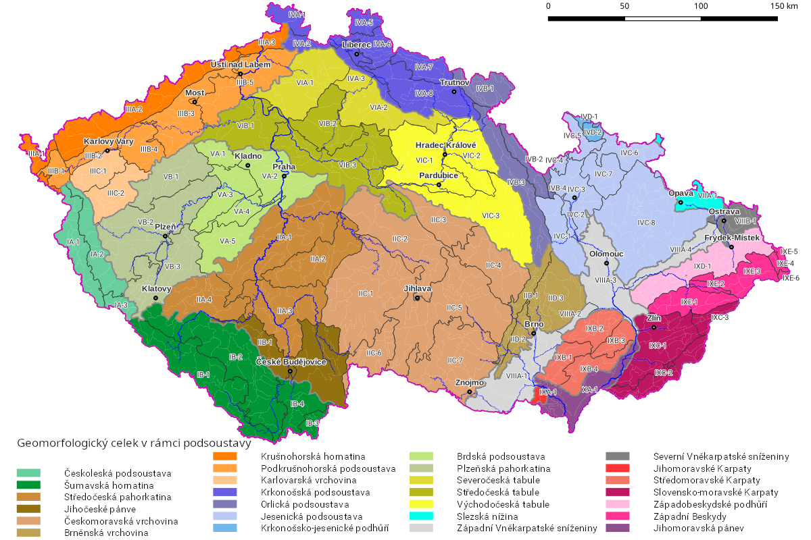

Jihočeský kraj zasahuje do:
Šumavské vrchoviny - Šumava, Šumavské podhůří, Novohradské hory, Novohradské podhůří
Česko-moravské soustavy - Třeboňská pánev, Českobudějovická pánev, Strředočeská pahorkatina, Českomoravská vrchovina
Krušnohorské soustavy - Středočeská pahorkatina


Průměrná nadmořská výška je asi 500m. n. m.
Na jihozápadě je Šumava s horou Plechý (1 378m. n. m.)
Při hranici s Rakouskem se nachází Novohradské hory
Povrch je nižší sněrem na severovýchod
Reliéf se měnil až do čvrtohor
Největší část kraje tvoří moldanubikum (přeměněné horniny, žuly) - Šumava, Novohradské hory, Blanský les
Jsou zde 2 sedimentální pánve s mladšími usazeninami - Třeboňská pánev, Českobudějovická pánev
v okolí vrchu Kleť v Blanském lese můžeme najít čediče a znělsce třetihorního stáří
vápence se zde vyskytují ve metamorfované formě především v okolí Holašovic a podél řeky Blanice